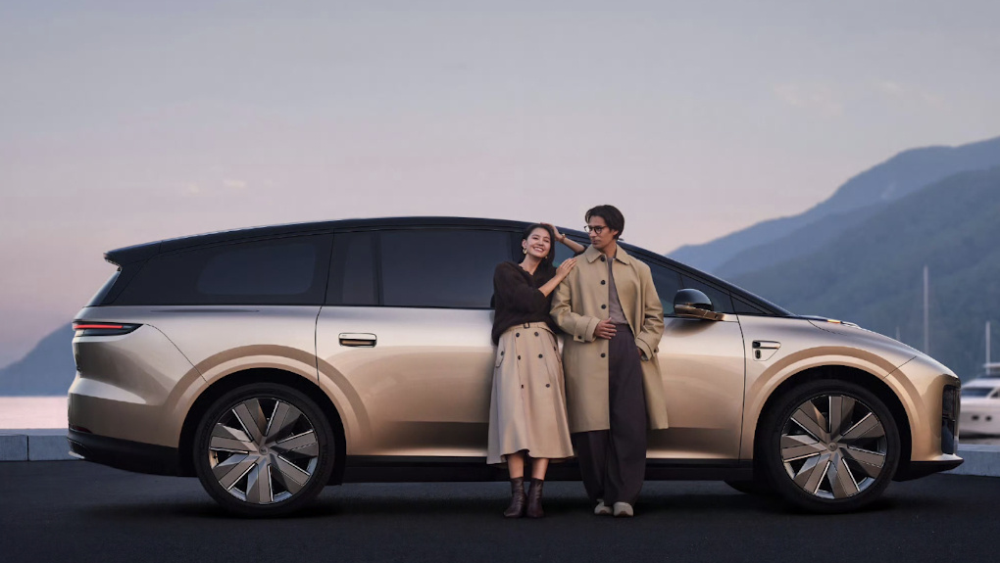

for DC Advanced UX Team.Vivi · Yohan · Libby · Lim Jisu · Katey · Anna
Latest News

Cockpit
Li Auto i9: a six-seat cabin that turns to face itself
Li Auto has confirmed the i9, its flagship pure-electric SUV and the second 'Home' series model after the Mega Home, for a September 16 debut. The headline cabin idea is rotating seats that let the second row swivel to face the third for a lounge-style layout; the box is 5,225 mm long on a 3,168 mm wheelbase, with 150 kW front / 250 kW rear motors and a 120 kWh pack (Sunwoda and CATL cells) targeting 800+ km CLTC.
리오토가 플래그십 순수전기 SUV i9를 9월 16일 공개한다고 확인했다. Mega Home에 이은 '홈' 시리즈 두 번째 모델. 캐빈의 핵심은 2열이 돌아 3열과 마주 보는 회전 시트—라운지식 대면 배치다. 전장 5,225 mm, 휠베이스 3,168 mm, 전 150 kW/후 250 kW 모터, 120 kWh 배터리(Sunwoda·CATL 셀)로 CLTC 800 km 이상을 노린다.
Guinness modernises without touching its logo: LoVely
AMV BBDO's new Guinness campaign swaps the V in 'Lovely' for the harp that has sat on the bottle for 160-plus years, turning the mark into a letterform. Nothing about the harp changed; only its job did. Creative Boom reads it as the smartest kind of refresh — heritage reused as typography instead of redrawn — and quotes AMV's George Hackforth-Jones: 'Sometimes the best ideas are right in front of you.'
AMV BBDO의 새 기네스 캠페인은 'Lovely'의 V를 160년 넘게 병에 붙어 있던 하프로 바꿔, 로고를 글자 하나로 쓴다. 하프는 한 획도 안 바뀌었고 역할만 바뀌었다. Creative Boom은 이를 가장 영리한 리프레시—유산을 다시 그리지 않고 타이포그래피로 재활용—로 읽으며 AMV의 조지 핵포스-존스를 인용한다. '최고의 아이디어는 종종 눈앞에 있다.'
Apple Watch Live Rewind: double-press to replay 15 seconds
Yanko's pick from Apple's event is not a health sensor but Live Rewind on Watch Series 12: double-press the crown and the watch shows subtitles of the last 15 seconds of conversation, transcribed on the S11 chip's Secure Exclave, with raw audio deleted and only text kept. Siri Recap summarises whole conversations into titles and key points; users can restrict it to work hours, saved summaries auto-delete after seven days, and it ships September 18 from $399.
Yanko从苹果发布会挑出的亮点不是健康传感器，而是Watch Series 12的Live Rewind：双击表冠，手表即显示过去15秒对话的字幕，由S11芯片的Secure Exclave本地转写，原始音频即删、只留文字。Siri Recap把整段对话总结成标题和要点；可限定仅工作时段启用，保存的摘要七天后自动删除，9月18日发售，399美元起。
Yanko가 애플 이벤트에서 고른 건 건강 센서가 아니라 Watch Series 12의 Live Rewind. 크라운을 두 번 누르면 직전 15초 대화가 자막으로 뜬다. S11 칩의 Secure Exclave에서 전사하고 원음은 지우고 텍스트만 남긴다. Siri Recap은 대화 전체를 제목과 핵심 포인트로 요약하며, 근무시간에만 켜두거나 저장 요약을 7일 뒤 자동 삭제할 수 있다. 9월 18일 출시, 399달러부터.
Apple's first foldable, the iPhone Duo ($1,999, October 23), pairs a 5.4-inch cover with a 7.6-inch inner display in matching aspect ratios, so content scales rather than reflows when you open it. Design notes from Yanko: a Grade 5 titanium frame with an asymmetric profile that tells your hand which way it opens, a nano-texture inner panel that hides the crease, Touch ID in the side button because Face ID would not fit, no SIM tray, and iOS 27 moving the dock vertical and the Dynamic Island to the screen edge. Postures include laptop-prop, camera rig and bedside clock.
애플 첫 폴더블 iPhone Duo(1,999달러, 10월 23일)는 5.4인치 커버와 7.6인치 내부 화면을 같은 비율로 맞춰, 펼칠 때 콘텐츠가 재배치되지 않고 확대된다. Yanko의 디자인 노트: 그레이드 5 티타늄 프레임에 어느 쪽으로 열리는지 손이 아는 비대칭 프로파일, 주름을 감추는 나노 텍스처 내부 패널, Face ID가 안 들어가 측면 버튼 Touch ID, SIM 트레이 삭제, iOS 27은 독을 세로로, 다이내믹 아일랜드를 화면 가장자리로 옮겼다. 노트북 거치·카메라 리그·머리맡 시계 자세도 지원.
Ténéré 700 World Raid: the settings that forget you
Motorcycle.com's first ride of the 2026 Ténéré 700 World Raid ($12,999) praises the split 23-liter aluminium tanks, 46 mm fully adjustable KYB forks and a new six-axis IMU that brings lean-sensitive ABS, traction and slide control. The HMI note for designers: a dedicated Mode button gives two power modes and three levels each of ABS and TCS, but everything reverts to the road setting when the key is cycled, so off-road riders must reset from the dash each stop. Score 90.5%.
Motorcycle.com试驾2026款Ténéré 700 World Raid（12,999美元）：好评点在分体式23升铝油箱、46 mm全可调KYB前叉和新增六轴IMU带来的倾角感应ABS、牵引力与滑动控制。给设计师的HMI笔记：专属Mode键提供两种动力模式和各三档ABS/TCS，但每次断电重启都会恢复公路设定，越野骑手每次停车都得在仪表上重设。评分90.5%。
Motorcycle.com의 2026 Ténéré 700 World Raid(12,999달러) 첫 시승. 분할형 23 L 알루미늄 탱크, 46 mm 풀 어저스터블 KYB 포크, 새 6축 IMU의 린 감응 ABS·트랙션·슬라이드 컨트롤이 호평. 디자이너용 HMI 메모: 전용 Mode 버튼으로 파워 2모드와 ABS·TCS 각 3단계를 고르지만 키를 껐다 켜면 전부 온로드 설정으로 되돌아가, 오프로드 라이더는 정차할 때마다 계기판에서 다시 맞춰야 한다. 점수 90.5%.
The second-generation Dacia Spring moves production from China to Slovenia on Renault's AmpR Small platform (shared with the Twingo E-Tech and R5). It grows 150 mm longer and 180 mm wider to 3,850 mm, seats four, and runs an 80 hp motor with a 27.5 kWh LFP pack for 250 km WLTP. Inside: a 7-inch digital cluster on every trim, a 10.1-inch touchscreen on Journey, a phone cradle instead of a screen on the base Expression, and unapologetically hard plastics lifted by colour accents.
2세대 다치아 스프링은 생산지를 중국에서 슬로베니아로 옮기고 르노 AmpR Small 플랫폼(Twingo E-Tech·R5와 공유)을 쓴다. 150 mm 길고 180 mm 넓어져 전장 3,850 mm, 4인승, 80마력 모터와 27.5 kWh LFP로 WLTP 250 km. 실내는 전 트림 7인치 디지털 클러스터, Journey 트림 10.1인치 터치스크린, 기본 Expression은 화면 대신 폰 거치대, 그리고 컬러 액센트로 살린 당당한 하드 플라스틱.
A MIIT filing reveals a long-wheelbase Tank 700 from GWM aimed at the Yangwang U8L: 5,445 mm long, 2,126 mm wide, 3,150 mm wheelbase and up to 3,480 kg, in a 2+2+2 layout with second-row captain's chairs. Design cues include side-hinged rear barn doors, an enclosed spare-wheel carrier, a roof spoiler and 20- or 22-inch wheels; power comes from a 2.0T Hi4-Z plug-in hybrid with 190 km electric range or a 3.0T twin-turbo V6.
MIIT 신고 자료로 GWM의 롱휠베이스 탱크 700이 드러났다. 양왕 U8L을 겨냥해 전장 5,445 mm, 전폭 2,126 mm, 휠베이스 3,150 mm, 최대 3,480 kg, 2열 캡틴 시트의 2+2+2 배치. 옆으로 열리는 리어 반 도어, 밀폐형 스페어 타이어 커버, 루프 스포일러, 20·22인치 휠이 디자인 포인트. 파워트레인은 전기 190 km의 2.0T Hi4-Z 플러그인 하이브리드 또는 3.0T 트윈터보 V6.
Range Rover on Chinese copies: 'stay the original'
Asked about the Jaecoo J5 and J7 — the latter nicknamed the 'Temu Range Rover' — Range Rover managing director Martin Limpert declined to talk lawsuits and called the copying a signal that 'within the luxury world our design seems to be inspirational.' The strategy, he says, is to keep evolving so the original stays ahead: buyers of 'the best of the best' will pay for five decades of design lineage a newcomer cannot replicate.
제쿠 J5·J7('테무 레인지로버'라 불리는)에 대해 레인지로버 총괄 마틴 림퍼트는 소송 얘기 대신, 베끼기는 '럭셔리 세계에서 우리 디자인이 영감을 준다는 신호'라고 답했다. 전략은 계속 진화해 원조가 앞서 있는 것. '최고 중의 최고'를 찾는 고객은 신생 브랜드가 흉내 못 낼 50년 디자인 계보에 돈을 낸다는 얘기.
For British Cycling's National Series and Championships, sponsored by Lloyds, studio Form avoided the clunky two-logo lockup by pushing both brands into the letterforms: it customised Anton, already British Cycling's typeface, so selected letters echo the curves of the federation's 'Vic' symbol and the Lloyds horse. Two sub-identities follow — a brighter, punchier Series for social, and a red-white-blue Championships drawn from the champion's jersey.
로이즈가 후원하는 브리티시 사이클링 내셔널 시리즈·챔피언십을 위해 스튜디오 Form은 어색한 두 로고 조합 대신 두 브랜드를 글자 안에 넣었다. 협회 서체인 Anton을 커스텀해 일부 글자의 곡선이 협회 심볼 'Vic'과 로이즈의 말을 닮게 한 것. 소셜용으로 더 밝고 강한 시리즈, 챔피언 저지의 빨강·하양·파랑을 쓴 챔피언십, 두 하위 아이덴티티가 뒤따른다.
Belfast's Robocobra Quartet made a 100-track, five-hour album called Hundred Pieces, and saxophonist Thibault Barillon grew its artwork: 100 agar plates cultured at home with different organic matter, each photographed centred and square on white, some re-shot weeks later as the colonies changed. One dish per track, a rapid GIF for the Spotify canvas, red type over turquoise on the sleeve — chance-based growth mirroring how the band records.
벨파스트의 Robocobra Quartet가 100곡·5시간짜리 앨범 『Hundred Pieces』를 냈고, 색소포니스트 티보 바리용이 그 아트워크를 '길렀다'. 집에서 다양한 유기물로 배양한 한천 접시 100개를 흰 배경 정사각형에 가운데 맞춰 찍고, 일부는 몇 주 뒤 군락이 바뀐 뒤 다시 찍었다. 트랙마다 접시 하나, 스포티파이 캔버스엔 빠른 GIF, 슬리브는 청록 위 빨간 글자—우연에 맡긴 성장이 밴드의 녹음 방식을 닮았다.
A safety mark becomes Helsinki's Train Factory logo
Hasan & Partners rebranded Helsinki's old train factory, now restaurants, theatre and galleries, around a mark they found on the carriages themselves: the lifting symbol that showed maintenance crews where it was safe to jack a wagon, sharpened into a 'T' that also echoes the building's triangular skylights. The logotype borrows Finnish train-car numbering, the palette takes brick red, mustard and grey-blue from the factory's own markings and cranes, and the tagline is 'Your Next Stop'.
Hasan & Partners为赫尔辛基旧火车工厂（如今是餐厅、剧场和画廊）做的新识别，核心是他们在车厢上找到的一个标记：指示维修人员安全起吊位置的吊装符号，被锐化成一个'T'，同时呼应建筑的三角天窗。字标借鉴芬兰列车编号样式，色板从工厂自身的标记和吊车取砖红、芥黄与灰蓝，口号是'Your Next Stop'。
Hasan & Partners가 레스토랑·극장·갤러리로 바뀐 헬싱키 옛 기차 공장을 리브랜딩하며, 객차에 실제로 찍혀 있던 표식을 로고로 삼았다. 정비사에게 안전한 잭업 지점을 알리던 리프팅 기호를 'T'로 다듬었고, 건물의 삼각 천창도 겹쳐 읽힌다. 로고타입은 핀란드 열차 번호 표기에서, 벽돌 빨강·머스터드·회청은 공장의 표식과 크레인에서 가져왔다. 태그라인은 'Your Next Stop'.
Paris illustrator Sarah Martinon draws dense botanical, architectural and dreamlike patterns at wallpaper scale, then lets them leave the page: Chanel's 2025 Winter Constellation film (dir. Gordon von Steiner) floated Lulu Tenney through animated versions of her drawings, Hermès put them in a Lugano window and a summer campaign of flying horses, and Christian Lacroix Maison, Arte and Lalique have followed. Her Biba-tinged hand is exactly what luxury houses want because no machine draws it.
巴黎插画师Sarah Martinon以壁纸尺度绘制繁密的植物、建筑与梦境图案，再让它们走出纸面：香奈儿2025冬季星辰短片（Gordon von Steiner执导）让Lulu Tenney在她画作的动画版中漂浮，爱马仕把它们搬进卢加诺橱窗和飞马夏季广告，Christian Lacroix Maison、Arte与Lalique紧随其后。带Biba气息的手绘正是奢侈品牌想要的——因为机器画不出来。
파리 일러스트레이터 사라 마르티농은 식물·건축·몽환적 패턴을 벽지 크기로 빽빽이 그린 뒤 종이 밖으로 내보낸다. 샤넬 2025 윈터 콘스텔레이션 필름(고든 폰 슈타이너 연출)에서는 룰루 테니가 그녀의 드로잉 애니메이션 속을 떠다녔고, 에르메스는 루가노 쇼윈도와 나는 말 여름 캠페인에 썼으며 크리스찬 라크르와 메종·Arte·랄리크가 뒤를 이었다. 비바 풍의 손맛—기계가 못 그리기에 럭셔리 하우스가 찾는다.
designboom's feature with iF Design Award argues interiors are shifting from fixed layouts to spaces users reconfigure, citing 2026 winners: Martinelli Luce and HABITS' Grammoluce lamp dimmed by pressing an elastic membrane, Yuko Nagayama's sound-insulating movable Relation Wall for Japanese homes, Studio Doruk Bicer's 49 m² modular home on mobile modules, Maya Arquitetura's reconfigurable Samba shelving, JFR Studio's HyperTank digital-physical rooms and Yule Space's Forest Book Loft. Adaptability, tactility and nature are the through-lines.
designboom이 iF 디자인 어워드와 함께 쓴 피처는 실내가 고정 배치에서 사용자가 재구성하는 공간으로 옮겨간다고 본다. 2026 수상작들이 근거다. 탄성 막을 눌러 밝기를 조절하는 Martinelli Luce×HABITS의 Grammoluce 램프, 나가야마 유코의 방음 이동 벽 Relation Wall, 이동 모듈로 짠 Studio Doruk Bicer의 49 m² 모듈러 홈, Maya Arquitetura의 재구성 선반 Samba, JFR Studio의 디지털-물리 공간 HyperTank, Yule Space의 Forest Book Loft. 적응성·촉감·자연이 관통 주제.
Paris Design Week runs September 10–19 across roughly 350 venues in Le Marais, Saint-Germain-des-Prés, Opéra and Bastille, with the Maison&Objet trade fair anchoring the first five days (September 10–14). designboom's guide sorts the highlights in and out of the fair — the exhibitions, open showrooms and installations worth a detour — a useful map for anyone on the ground or following the week's CMF and furniture signals from afar.
파리 디자인 위크가 9월 10~19일 마레·생제르맹데프레·오페라·바스티유 4개 지구, 약 350개 장소에서 열린다. 메종&오브제 페어가 첫 닷새(9월 10~14일)를 떠받친다. designboom 가이드는 페어 안팎의 볼거리—돌아갈 가치가 있는 전시, 오픈 쇼룸, 설치—를 지도처럼 정리했다. 현장에 있든, 이번 주 CMF·가구 신호를 멀리서 좇든 유용하다.
Clear-shell Game Boys always stopped at the display; Louis Huang's Arduview makes the screen itself transparent. A see-through OLED sits on a transparent PCB inside a clear shell, so you watch pixels light up while looking straight through to the chip, the orange copper flex cable, the button domes and the USB-C port. Credit-card sized, 50 g, built on the open-source Arduboy platform with 400 games preloaded and no app store, pairing or account.
투명 케이스 게임보이는 늘 화면에서 멈췄다. 루이스 황의 Arduview는 화면까지 투명하게 만든다. 투명 OLED가 투명 기판 위, 투명 셸 안에 있어 픽셀이 켜지는 걸 보면서 칩·주황 구리 플렉스 케이블·버튼 돔·USB-C 포트까지 그대로 들여다본다. 신용카드 크기 50 g, 오픈소스 Arduboy 기반, 게임 400개 내장, 앱스토어·페어링·계정 없음.
Mauricio Romano's corrugated-paper clock has no hands: a hidden magnet nudges individual pleats of an accordion-folded disc open or closed to mark the hour, so 'the clock doesn't tell you the time so much as it lets you notice it.' Deep red, cobalt, teal and terracotta versions hang from a coloured cord. Sketched a decade ago as a student study of synaesthesia and shape, it evolved from his triangle-based Geometry Clock and so far exists only on Instagram.
마우리시오 로마노의 골판지 시계에는 바늘이 없다. 숨은 자석이 아코디언처럼 접힌 원반의 주름 하나하나를 열고 닫아 시각을 표시한다. '시간을 알려주기보다, 주의를 기울이면 알아차리게 하는 시계.' 진홍·코발트·청록·테라코타 버전이 색 끈에 매달린다. 10년 전 공감각과 형태를 다룬 학생 스케치에서 시작해 삼각형 기반 Geometry Clock을 거쳐 왔고, 아직은 인스타그램에만 있다.